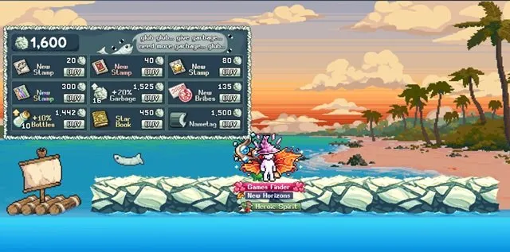
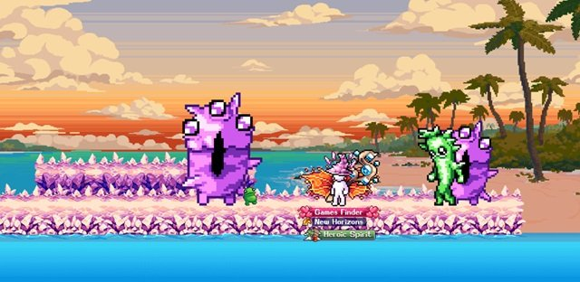
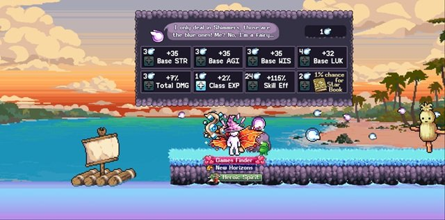
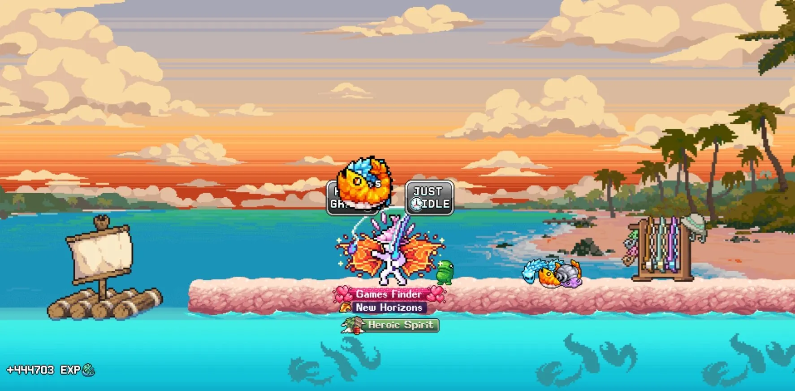
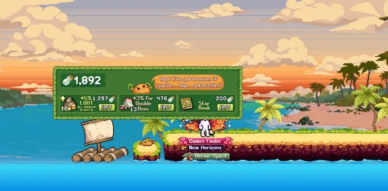
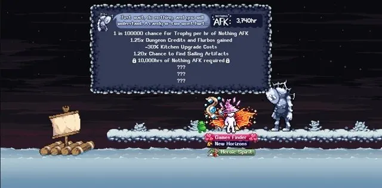

이 Idleon Island Expeditions 가이드는 각 섬의 혜택을 극대화하기 위한 최고의 해금 순서와 전략 팁을 안내합니다. World 2에 위치한 이 섬들은 낚시 스킬 레벨 30이 있어야 메시지 병이 스폰되는 낚시 부두 끝에 도달할 수 있습니다.
6개의 섬에는 다양한 일일 및 주간 게임 메커니즘이 가득하며, 각 섬의 비용이 점점 증가하므로 권장 해금 순서는 Trash > Crystal > Shimmer > Seasalt > Rando > Fractal입니다. 이유와 팁은 아래에 설명됩니다.
Island Expeditions 해금 순서
신규 플레이어를 위한 권장 해금 순서: Trash > Crystal > Shimmer > Seasalt > Rando > Fractal. 이 섬들은 Omar Da Ogar 옆의 게시판을 클릭하여 구매합니다. 이 순서가 권장되는 이유는 다음과 같습니다.
- Trash: 다른 섬을 해금하는 데 도움이 되는 메시지 병 획득 버프를 제공합니다.
- Crystal: 타임 캔디를 드롭하고 초반 Idleon 월드의 계정 진행을 돕는 큰 클래스 경험치를 보상하는 크리스탈 몬스터를 스폰합니다.
- Shimmer: 기본 스탯, 데미지, 경험치, 스킬 효율 보상을 위한 주간 챌린지를 활성화합니다.
- Seasalt: World 6 장비를 위한 새로운 낚시 위치를 추가하지만, 낮은 낚시 효율로도 기본적인 Icefish를 낚을 수 있어 높은 낚시 경험치 획득이 가능합니다. World 6에 있거나 근접했다면 Shimmer보다 먼저 해금하세요.
- Rando: 매주 최소 하나의 무작위 이벤트 보스를 보장하고 모든 섬이 해금된 후 메시지 병을 사용할 장소를 제공합니다. 어차피 매시간 스폰될 수 있고 드롭이 유용하지만 진행에 특히 강력하지 않으므로 낮은 우선순위입니다.
- Fractal: 여기서 아무것도 하지 않고 AFK 시간(또는 타임 캔디)을 보낼 때마다 계정 버프를 제공합니다(타운도 섬 해금 후 포함). 아무것도 하지 않는 데 필요한 시간이 많아 타임 캔디를 사용하도록 설계되었습니다. 신규 플레이어에게는 타임 캔디나 일반 AFK 시간을 먼저 더 잘 활용할 곳이 있으므로 마지막으로 권장됩니다.

Trash Island 정보 및 팁
Trash Island와 Omar Da Ogar 퀘스트 완료는 Deepwater Docks에서 스폰되는 메시지 병을 늘리는 주요 방법이므로 가장 먼저 해금해야 할 섬입니다. 이 섬에서는 매일 쓰레기가 밀려와 수거하여 Garbage Tuna의 상점에서 사용할 때까지 쌓입니다.

쓰레기와 메시지 병 획득 구매가 우표, 뇌물, Trash Tuna Nametag과 같은 기타 유용한 일회성 업그레이드보다 저렴할 때 우선적으로 구매하는 것이 권장됩니다. 이렇게 하면 모든 계정 보너스를 점진적으로 해금하면서 쓰레기와 메시지 병 획득의 기반을 다질 수 있습니다.
Crystal Island 정보 및 팁
매일 타임 캔디를 드롭하는 거대 크리스탈 몬스터를 스폰합니다. 몬스터가 쌓이므로 매일 이 섬을 방문할 필요는 없습니다. 타임 캔디도 유용하지만 이 크리스탈의 경험치도 클래스 레벨에 크게 도움이 됩니다. 단, 이 몬스터의 체력은 게임에서 도달한 가장 먼 몬스터 맵을 기준으로 하므로 항상 준비를 잘 갖추고 오세요.

Idleon을 더 진행하면 이 섬을 World 4의 Chocolatey Chip과 결합하여 더 작은 일반 크리스탈 몬스터를 스폰시켜 추가 희귀 드롭과 경험치를 얻을 수 있습니다.
Shimmer Island 정보 및 팁
시머 포인트를 위한 주간 챌린지로 Idleon 계정의 한계를 테스트하는 섬입니다. 챌린지에는 스탯, 데미지, 스킬 효율, 이동 속도, 치명타 확률 등 계정 수치 극대화가 포함됩니다. 매주 이것들을 청구하고 최대 포인트를 위해 캐릭터를 최적화하는 것을 기억하세요.

시머 포인트는 주로 스킬 효율 부스트에 집중해야 합니다. 이것이 진행에 가장 영향력이 크며, 기본 스탯, 총 데미지, 클래스 경험치는 다른 곳에서 쉽게 얻을 수 있기 때문입니다. 남은 포인트는 다음 주를 위해 저축하거나 모든 스탯 비율을 부여하는 괜찮은 스타 탤런트(Dummy Thicc Stats)를 획득하는 데 사용할 수 있습니다.
Seasalt Island 정보 및 팁

Icefish, Shellfish, Jumbo Shrimp, Caulifish를 위한 새로운 낚시 위치를 추가하는 간단한 섬입니다. 이 물고기들의 주요 목적은 World 6 장비와 우표를 위한 것이며, 이전 옵션보다 낚시 경험치도 훨씬 더 많이 제공합니다. 진행을 위해 새로운 물고기가 필요하다면 이 섬을 더 일찍 해금하세요.
Rando Island 정보 및 팁
이 섬은 매주 최소 하나의 무작위 이벤트 보스를 보장하며 모든 섬이 해금된 후 메시지 병을 사용할 장소를 제공합니다. 어차피 매시간 스폰될 수 있고 드롭이 유용하지만 진행에 특히 강력하지 않으므로 낮은 우선순위입니다.

모든 섬을 해금한 후에는 Rando Event Looty 특별 탤런트 책(AFK 획득량을 약간 부여)을 위해 메시지 병을 저축하세요. 그런 다음 메시지 병을 전리품과 이중 보스 확률 사이에서 더 저렴한 업그레이드에 사용하여 모든 희귀 보스 드롭을 획득하는 데 도움을 받으세요.
Fractal Island 정보 및 팁
여기서 아무것도 하지 않고 AFK 시간을 보낼 때마다(섬 해금 후 타운도 포함) 계정 버프를 제공하는 섬입니다. 아무것도 하지 않는 데 필요한 시간이 많아 플레이어가 타임 캔디를 사용하도록 설계되었습니다. 신규 플레이어에게는 타임 캔디나 일반 AFK 시간을 다른 곳에 먼저 더 잘 활용할 수 있으므로 마지막으로 권장됩니다.
이것을 하는 주요 이유는 드롭 확률이 10만 분의 1인 Master of Nothing 트로피로, 전체 AFK 획득량 10%와 스킬 경험치 70%를 제공합니다. 현재 이 단계에서 다른 무(無)의 보너스는 추천하지 않습니다. 혜택이 엔드게임 플레이어를 제외하고는 시간 투자 대비 너무 작기 때문입니다.